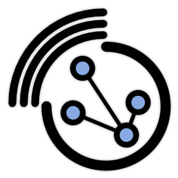
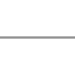

thibaut.demare@univ-lehavre.fr
28 - 30 April 2015
Dynamic Graphs and a tool to handle them
The GraphStream library

Thibaut Démare
LITIS - Université du Havre
NeX Days' 2015 - Agadir, Morocco
28 - 30 April 2015
Overview
- Dynamic graphs
- GraphStream
- The Event Model
- Algorithms
- Visualization
- Interactions with other tools
- Demo
- Basic Demo
- Demo of interactions with GAMA
Dynamic graphs
First, static graphs
Structure:
- Nodes, Vertices
- (undirected) Edges, Links
- (directed) Arcs
Algorithms: Graphs Theory
- graph colouring problems
- routing problems
- flow problems
- covering problems
- subgraphs problems
When we add dynamics...
What kind of dynamics?
- values/weight on edges or nodes?
- nodes and/or edges added/removed?
Problem with algorithms
- As soon as computed the result has vanished.
- Can we stop the graph and recompute?
- Depends on the dynamic graph model.
Dynamic Graph Models
Many graph models consider in some ways the dynamics
but they are bounded to their application domain
What about Dynamic Graph Theory?
Complex Networks
Exploration: analysis of "real world" networks (web graphs, biological networks, social networks)
Modelling: build artificial networks (preferential attachment)
Measures on graphs: community, distribution, dimensions, etc.
Iterative Construction/Iteration: graphs' dynamics
Aggregative Methods
All the evolution is known in advance, the dynamic graph is aggregated into a static graph.
Why? Because it allows the use of classical graph theory.
Re-optimisation
Build and maintain structures on dynamic graphs (e.g. spanning trees).
Updating an existing structure after some modifications is more effective than recomputing it from scratch.
GraphStream
GraphStream
Study interaction networks and their dynamics
- Dynamic Algorithms
- Dynamic Visualization
- Stefan Balev
- Antoine Dutot
- Yoann Pigné
- Guilhelm Savin
In a nutshell
Java library with a handy public API
Graph g = new SingleGraph("MyGraph");
g.read("some-file.tlp");
g.getDegree();
g.display();
Based on an event model: Nodes and Edges are Added/Removed/Modified
Interaction with over tools
- Off-line: several import / export file formats
- On-line: through the API or through a network connection
Architecture
Public API
- org.graphstream
- .graph
- .stream
- .ui
- .algorithm
- .util
Organised into sub-projects
- gs-core
- gs-algo
- gs-ui
- gs-netstream
- gs-gama
- gs-netlogo
- gs-geography
Get GraphStream!
On the website
- graphstream-project.org
- official releases (v1.3) of gs-core, gs-algo, gs-ui
- nightly-builds
On Github
- github.com/graphstream
- bug tracker of gs-core
On Maven
<groupId>org.graphstream</groupId>
<artifactId>gs-core</artifactId>
<version>1.2</version>
The Event Model
GraphStream's Event Model
The dynamics of the graph is expressed by an event model
Events can be:
- Addition or removal of nodes
- Addition or removal of edge
- Addition, update or removal of data attributes
- Time steps
A stream of events modifies the structure of a graph.
GraphStream's Event Model
Sources
They produce such stream of events.

Sinks
They can receive such stream of event and process it.

Pipes
They are both source and sink. A graph is a pipe.

Pipelining
Sources send their events to sinks.
- Observer design pattern
- Publish / Subscribe
- Java Swing listeners
Sources, pipes and sinks can be connected in a pipeline of elements.
Example of an often used pipeline:

Graph
File
Viewer
Pipelining
Graph graph = new SingleGraph("Some Graph");
graph.display();
FileSource source = new FileSourceDGS();
source.addSink( graph );
source.begin("someFile.dgs");
while( source.nextEvents() ){
// Do whatever between two events
}
source.end();
Graph
File
Viewer
Pipelining
The stream of events can flow between sources and sinks:
- across the network,
- processes,
- threads.
For example a viewer can run in a distinct thread or machine, while a simulation on a graph runs on another.
Pipelining
Receive events from another some other process/thread/programme/machine
Graph g = new SingleGraph("RWP");
ThreadProxyPipe pipe = getPipeFromElsewhere(); //fake function
pipe.addSink(g);
g.display(false);
while (true) {
pipe.pump();
Thread.sleep(1);
}
Graph components
Several classes for various graph structures.
- "Single" graphs (1-graph), "multigraphs" (p-graphs, that are graphs where several edges can connect two nodes).
- Directed, undirected graphs.
Several internal representations:
- fast data retrieval,
- data compactness.
Representation of a graph at a given time (static). But this representation can evolve.
Data Attributes
- Any number of data attributes can be associated with any element of the graph.
- An attribute is made of an identifier and a value that can be any Java Object.
- You can place attributes on nodes, edges and on the graph itself.
g.addAttribute("My attribute", aValue);
Node n = g.getNode("A");
n.setAttribute("xy", 23.4, 55.0);
Edge e = g.getEdge("AB");
e.removeAttribute("selected");
double w = e.getNumber("weight");
Algorithms
Main Algorithms
Searches
random searches, shortest paths, spanning trees, etc.
Metrics
modularity, centrality, degree distributions, connectivity, density, etc.
Generators
random, regular, preferential attachment, small world, from GIS, from the web, etc.
Focus on Dynamic Connected Components
import org.graphstream.algorithm.ConnectedComponents;
//...
ConnectedComponents cc = new ConnectedComponents();
cc.init(graph);
while(something) {
cc.getConnectedComponentsCount();
canDoSomethingWithGraph();
}
Focus on Dynamic Shortest Paths
import org.graphstream.algorithm
.networksimplex.DynamicOneToAllShortestPath;
//...
DynamicOneToAllShortestPath algorithm =
new DynamicOneToAllShortestPath(null);
algorithm.init(graph);
algorithm.setSource("0");
while(something) {
algorithm.compute();
canDoSomethingWithGraph();
}
Some tutorials to go farther
Visualization
Visualization
Aims
- Dynamic Visualization: the graph is evolving, so does the visualization.
- Get more information than the graph itself.
Extra visual information
CSS


graph {
padding: 50px;
}
node {
size-mode: fit; shape: rounded-box;
fill-color: white; stroke-mode: plain;
padding: 5px, 4px; icon-mode: at-left;
icon: url('data/Smiley_032.png');
}
Extra visual information
CSS classes
graph.addAttribute("stylesheet",
"graph {padding : 50px;}"
+ "node {size: 100px; fill-mode: image-scaled;}"
+ "node.fun {fill-image: url('fun.gif');}"
+ "node.dull {fill-image: url('dull.png');}");
Node a = graph.addNode("A");
Node b = graph.addNode("B");
Node c = graph.addNode("C");
graph.addEdge("AB", "A", "B");
graph.addEdge("CB", "C", "B");
graph.addEdge("AC", "A", "C");
a.addAttribute("ui.class", "fun");
b.addAttribute("ui.class", "fun");
c.addAttribute("ui.class", "dull");
Extra visual information
CSS classes
...and of course it is dynamic.
Extra visual information
Sprites
Graphical objects that give extra information on the application you deal with.
SpriteManager sman = new SpriteManager(graph);
Sprite pin = sman.addSprite("pin");
Sprites are also tunable with CSS:

sprite#pin {
shape: box;
size: 32px, 52px;
fill-mode: image-scaled;
fill-image: url('mapPinSmall.png');
}

Extra visual information
Some tutorials to go farther:
The CSS specification :
http://graphstream-project.org/doc/Tutorials/GraphStream-CSS-Reference_1.2/
A thorough tutorial on visualization:
http://graphstream-project.org/doc/Tutorials/Graph-Visualisation_1.1/
Interactions with other tools
Off-line interactions
files
- Tulip
- Gephi
- GML
- Pajek
- DOT
- LGL
- ncol
- DGS
DataBase(s)
- Neo4J
DGS004
"graph.dgs" 0 0
an A x:1 y:2.3 label:"Node A"
an B x:0 y:0
an C xy:2.3,1
an D xyz:1,1
ae AB A B weight:23.3
ae AC A C weight:2
st 1.0
ae BC B > C
ae BD B > D
st 1.1
dn B
On-line interactions: NetStream
- Export streams of events to other applications / machines / languages
- Both ways. From GS to other and from other to GS
- Binary network protocol
- TCP socket (and WebSocket) implementation
- Several languages (Java, C++, Python, JS)
import org.graphstream.stream.netstream.NetStreamReceiver;
//...
NetStreamReceiver net = new NetStreamReceiver(2001);
ThreadProxyPipe pipe = net.getDefaultStream();
pipe.addSink(graph);
while (true) {
pipe.pump();
Thread.sleep(100);
}
GAMA and NetLogo Extension
- GAMA and NetLogo agents send graph events to external application
- The external application maintains a dynamic graph and runs algorithms on it
- It sends the computed results back to GAMA or NetLogo
- Agents can receive and use them to take their decisions
Slides and Material
Get the Slides and Materials on-line:
NeX2015)